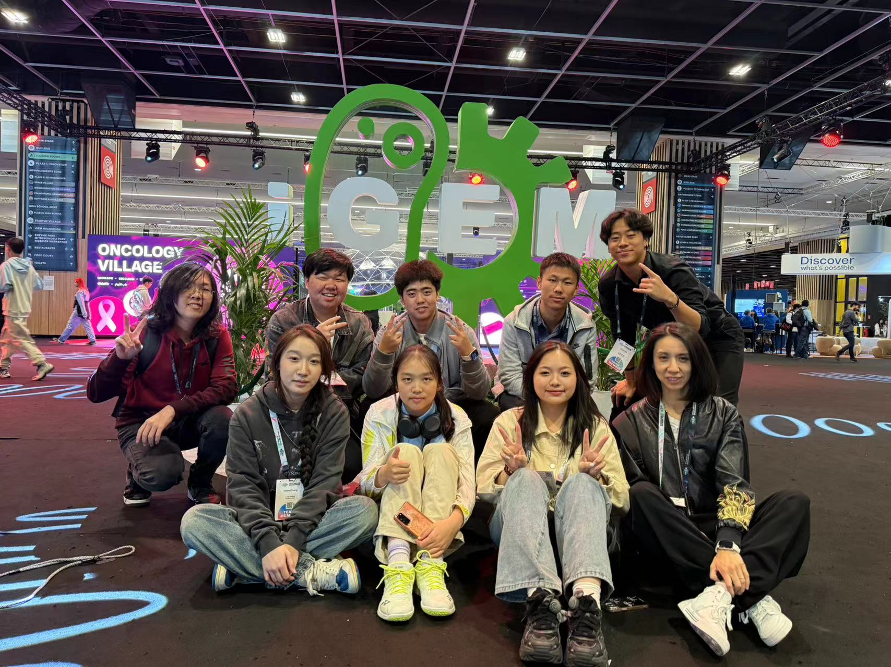
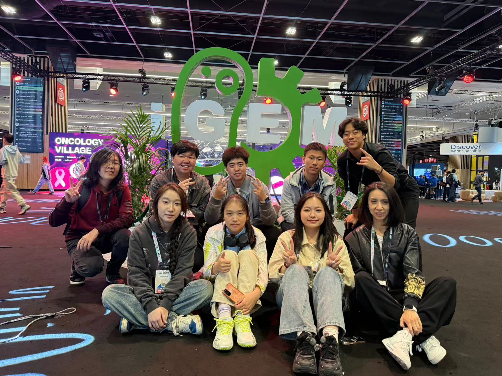

Hi, I'm Jerry Shen
“Become who you are!” — Friedrich Nietzsche
My journey is about connecting my work as an Urban Activist, my lens as a Global Observer, and my skills as an Interdisciplinary Scholar to build bridges and mend societal cracks.
Video Essay: The Urban Patchworker
About Me
I invited my high school friend, Jason Zeng, to share his perspective on me:
"From my perspective, Jerry is a bridge-builder, unifying his roles as an Interdisciplinary Scholar and Urban Activist."
"He uses empathy to translate complex societal 'cracks'—like health disparities—into human stories, blending data, economics, and art. This approach extends beyond academics; as a Leader and Entrepreneur, he builds tangible solutions."
"Driven by a Global Perspective, Jerry connects disparate fields, from AI ethics to robotics, to foster dialogue and create measurable change."
"I believe in not just observing the cracks in our society, but in taking real, tangible actions to mend them, starting with my own community." — Jerry Shen
My Journey as an Activist
KINRICCI “Star Wish” Foundation
My Role: Initiator & Co-Founder
Inspired by reading Orwell and observing the class divides in my city, I founded a foundation to provide tangible support for disadvantaged worker groups in China.
What I Did:
- Drafted the foundation charter and standardized documents.
- Established a self-sustaining recycling program, selling discarded packaging to fund the foundation.
- Initiated and co-organized a New Year Charity Run, reported by the Shenzhen Evening News.
Impact:
- Generated $18,000 in profit for the fund.
- Successfully aided 4 families facing financial difficulties.
.jpg)

Vanke Shen Zhen STEM Maker Fair
My Role: Exhibitor & Promoter
As part of the community promotion, we represented the school at the Vanke Makerfair to promote STEM education and seek support for our team (like sponsorship).
What I Did:
- Show our FRC & VEX robots to hundreds of families and children.
- Introduce our team's mission and technical design to potential corporate sponsors.
- Explain the value of STEM education to community members and local media.
Impact:
- I successfully attracted the investment intention of a 3D printing company.
- It has enhanced the participation of the local community in our robot project.
Vaccine Hesitancy & Public Art Exhibition
My Role: Researcher & Curator
My research on vaccine hesitancy showed a deep cognitive gap. Data alone couldn't bridge it. So, I translated my 118 survey responses into a public art exhibition to tell a visual story.
What I Did:
- Designed data visualizations from my survey on vaccine cognition.
- Created a physical art installation (the blue "flu virus" model) to make the invisible threat visible.
- Curated the exhibit at a public venue (Shenzhen-MixC-Wanxiang).
Impact:
- Attracted over 1,000 visitors.
- This was my first "public health patch," translating data into an emotional, resonant narrative.


TEDx Shahe Street Salon
My Role: Speaker
To further bridge the cognitive gap, I brought my findings on influenza's economic impact to the TEDx stage.
What I Did:
- Translated complex economic terms (from my AP Micro project) into the simple metaphor of "ripple effects."
- Analyzed influenza's multi-level economic impacts on individuals, enterprises, and society.
- Proposed a 3-tiered response strategy to the audience.
Impact:
- Delivered a 10-minute speech to over 100+ live audience members.
- Successfully communicated "Health Economics" concepts to a general public.

Shenzhen Evening News Charity Run
My Role: Philanthropic Student Representative
As part of my foundation's outreach, I participated in a major city-wide charity event, acting as a representative for student-led philanthropy.
What I Did:
- Represented the "Star Wish" project at the 2025 "New Year's Step" Public Welfare Action.
- Gave an interview to Shenzhen Evening News about the importance of youth involvement in social good.
.jpg)
"From the energy of New York to the precision of Frankfurt, my travels shaped me. I learned that to solve local problems, you must first understand global systems." — Jerry Shen
My Global Journey
2024
Piecemeal World Map: My "Global Perspective" Enlightenment
My Role: Traveler, Exchange Student
My "global perspective" wasn't acquired in a single international competition; it was a long-term jigsaw puzzle. It began before 2023, with my exploration of cultural differences across China's provinces and my travels to International cities, like New York in USA and Paris in France.
My Reflection:
These early immersive experiences were my "training camp" for cross-cultural communication. I learned to observe, ask questions, and understand the thinking of people from different backgrounds. This built the solid foundation for my later multinational exchanges, such as in Germany and Paris.
IVY CUP Speech Competition: The First Knock on "Global Issues"
My Role: Competitor, Speaker
If early travel was "passive" observation, IVY CUP was my first "active" attempt to dismantle a complex global issue and form my own public opinion.
My Reflection:
The value of this competition far exceeded the speech itself. It forced me to research fields I had never touched. I realized that "knowing" about global issues was far from enough; instead, it sparked a strong "cognitive thirst" in me—a desire to explore the complex causes behind these grand issues and find paths to genuinely participate.

Summer Research Exploration (Beijing & Shanghai)
My Role: Researcher
I spent the summer of 2024 conducting research in Beijing and Shanghai, diving deep into the latest technologies in distinct subjects, which served as a crucial foundation for my later academic performances.

Siemens Global Supplier Day (Germany)
My Role: Assistant to the CEO
I traveled to Germany to gain insights into global supply chain management and corporate sustainability from a world leader.
My Reflection:
- I originally thought that globalization was an abstract concept, but at the headquarters of Siemens, I witnessed its 'wireframe' with my own eyes.
- I realized that 'sustainable development' is not a single button, but rather a sophisticated network composed of thousands of enterprises. A minor adjustment at the headquarters will propagate along the supply chain, leading to the elimination of the inferior and the selection of the superior, ultimately resulting in a huge loss for a company or even its immediate bankruptcy.
- The 'ideal model' I had constructed academically was easily defeated by this vast and intricate real system. I realized that 'fixing the cracks' is not achieved through passion, but through a precise understanding of this global system.

iGEM International Competition (Paris)
My Role: Student Leader
My role as Student Leader culminated in traveling to Paris for the iGEM Grand Jamboree. This was the ultimate test of our "global perspective."
My Reflection:
- In Paris, my reflection was that we had fallen into the "curse of knowledge". We are a group of technically excellent engineers, but we are unable to communicate with the world. I painfully realized that innovation itself doesn't speak; it must be "translated". The real "global challenge" is not our biological experiments, but how to bridge the cultural and linguistic gaps so that our achievements can be understood and recognized by a diverse international jury. I have learned that empathy is not only a social skill, but also the first tool for global scientific cooperation.
FRC Competition (Shanghai & USA)
My Role: Student Leader & Engineer
Competing in both Shanghai and the USA was a profound cross-cultural experience.
My Reflection:
- I witnessed with my own eyes that teams from the United States and Shanghai achieved equally outstanding engineering results with completely opposite philosophies
- This completely shattered the assumption in my mind that there was only one best path
- I understand that global leadership is not about imposing one's own style, but rather diagnosing the cultural background and transforming one's own way of thinking, thereby activating the entire team.
Columbia Pre-College (New York)
My Role: Student in a Global Cohort
Studying in New York City, a global hub, was as educational as the course itself. The true value was the global cohort.
My Reflection:
- I truly experienced the intense friction brought about by cognitive diversity. I learned that global thinking is not merely about understanding other countries (that's just traveling); it means accepting comments or criticisms from different cultures, regions, and backgrounds.
Conrad National Finals (Shanghai)
My Role: Team CEO
Through a national final, the Conrad Challenge judges projects based on their potential for global impact and sustainability.
My Reflection:
- I realized that the issue of data center energy consumption that we were trying to address was not a "Shanghai" problem, but rather a "node" problem within the global computing network. This taught me that to become an effective "city actor", I must first be a "global observer".
- Because if you don't understand the global technological and capital system that shapes this city, you simply cannot solve any of the real problems it faces in the 21st century.
MEC Competition (Shenzhen)
My Role: CEO
We developed "SmartPets" in Shenzhen, a global innovation hub. Our business plan inherently had to consider international markets.
My Reflection:
- My reflection is that this has reshaped my identity as an innovator. We are no longer a "Shenzhen team"; from the very first day of our establishment, we have tacitly become a "global team".
- The pressure we face is not to win the local competition, but to prove that our business model can compete with those of Silicon Valley or London.
- This shift in mindset is fundamental: in today's world, "global perspective" is not a passive lens through which you observe; it is the "battlefield" where you participate in the competition.
"I've learned that a true leader is not a commander, but a 'bridge-builder' who connects people through deep listening and mutual trust." — Jerry Shen
My Leadership Evolution
2023 (Prequel)
2024 (Manager)
Prequel: Two Reflections as a "Follower" (CTB & NYEC)
My Role: Team Member (CTB), CIO (NYEC)
In 2023, my roles in CTB and NYEC were not as captain or CEO. As CIO or a general member, I observed team decisions from the "trenches."
My Reflection (The Why):
I witnessed how a clear vision could ignite a team, and how a lack of direction led to friction. I painfully realized that a team's potential is not limited by its strongest member, but by the leader's vision and accountability. These two "follower" experiences were my awakening. I told myself: "Instead of waiting for instructions in chaos, I will become the one who sets the direction."
Future Outlook:
These experiences ignited my "initiative." I resolved to seek the "direction-defining" role in all future projects.
Practice Field: Serving My VMA Community (SA & SNC)
My Role: Student Ambassador (SA), SNC Member
After reflecting on why to lead, I immediately sought how to practice. SA and SNC (two student organizations in my school) were my answer.
My Reflection:
This wasn't about titles; it was about "service." As a Student Ambassador, I was the "face" of the school, learning to clearly convey our community spirit to visitors. In SNC, I learned to organize internal events to build cohesion. This trained my empathy and communication—the fundamental "muscles" of leadership.
Advanced: From "Servant" to "Manager" (FRC & iGEM)
My Role: Team Leader (FRC), Student Leader (iGEM)
In 2024, I stepped up, bringing my SA/SNC experience and my CTB/NYEC "ambition." My role evolved from "community servant" to "complex project manager."
My Reflection:
In FRC, I had to be the "bridge" connecting the engineering and media teams. In iGEM, I not only managed an interdisciplinary team but also had to "translate" our complex bio and hardware systems into a clear story on the international stage in Paris. I learned to manage time, balance conflicts, and lead a team toward a known, clear goal.
 

Finale: From "Manager" to "Creator" (Conrad, MEC & STEM Racing)
My Role: CEO & Team Captain / Team Manager
If FRC and iGEM were about leading a team to a "known" goal, my 2025 projects required me to be the "CEO"—leading a team to an unknown future I had to create.
From 0 to 1:
"SmartPets" (MEC) and the "HPC System" (Conrad) were my insights into market gaps. I was "creating" a business—designing a product, writing the business plan, and assessing risk.
In STEM Racing China, as Team Manager, I balanced technical design with commercial feasibility. I led the aerodynamic design (CAD, 3D modeling) while also formulating sponsorship strategies and writing cost analysis reports to ensure maximum cost-effectiveness.
My Reflection:
This was the final answer to my 2023 "Prequel" reflections. Entrepreneurship isn't a title; it's the complete transformation from "awaiting instructions" to "creating the vision."
"The world's most complex problems don't fit into neat boxes. True solutions are found at the intersection of multiple subjects." — Jerry Shen
My Interdisciplinary Projects
2024
Research on Teenagers' TCM Literacy (CTB)
My Role: Team Member
This was one of my first exposures to formal research, blending cultural studies with data analysis to understand youth perspectives on Traditional Chinese Medicine (TCM).
What I Did:
- Finished 10 literature reviews on TCM literacy and youth culture.
- Conducted surveys for 100+ teenagers.
- Analyzed survey data, including trust in TCM, its real-life applications, and parental influence.
- Delivered the final presentation with teammates.
.png)
iGEM: Bridging Biology and Hardware
My Role: Interdisciplinary Researcher
Beyond my leadership role, the iGEM project was a deep dive into interdisciplinary scholarship. My core task was to be the "translator" between the wet lab (biology) and the engineering team (hardware).
What I Did:
- Helped develop the dual detection engineering architecture using modular design and standardized Golden Gate interfaces.
- Designed and implemented six hardware modules (microfluidic chips, optics, temperature control).
- Validated the universality of the system (for glucose, uric acid, etc.) through 5 bio-experiments and multiple hardware iterations.

Conrad Challenge: HPC Research
My Role: Interdisciplinary Researcher
Beyond the "CEO" role, my primary contribution was as a researcher, blending computer science with energy economics.
What I Did (Scholarly Context):
- Researched the thermal dynamics and energy consumption of High-Performance Computing (HPC) data centers.
- Designed the "HPC Immersion Cooling System" concept, analyzing fluid dynamics and heat transfer principles.
- Wrote the technical specifications and feasibility report for our business plan.

Model Entrepreneur (MEC): "SmartPets" Research
My Role: Market Researcher & Strategist
For "SmartPets," my scholarly role was to research the intersection of AI, consumer behavior, and market economics.
What I Did (Scholarly Context):
- Conducted market research on the pet-tech industry, analyzing economic trends and gaps.
- Researched the core competitors around the world, and AI-driven pet consumption decision behavior.
- Developed the core AI model concept for personalized pet recommendations.
FRC Robotics: Engineering & Design
My Role: Engineer & Propagator
My "Scholar" role in FRC was technical and commercial. I was an engineer applying physics, computer science, and design principles. I was also an propagator who showcased our team and sought for the potential sponsor for our team.
What I Did (Scholarly Context):
- Utilized tools to fix and build the robot.
- Applied principles of physics (mechanics, torque, center of gravity) to optimize robot performance.
- Joined the stem makerfair in Shen Zhen, representing the school to exhibit our work and effort on several robotics competitions, FRC & VEX.

Summer Research (SH & BJ)
My Role: Academic Researcher
The research programs in Shanghai and Beijing were the foundational academic experiences. I focused on interdisciplinary learning and thinking.
What I Did (Scholarly Context):
- Studied quantitative and qualitative research methodologies. Studied the research methodologies in laboratory.
- Analyzed previous essays about the topic.
- Wrote a scientific report based on my research in these two places.
Quantifying Holistic Review: A Multi-Modal Approach
My Role: Co-researcher & Published Paper Co-author
I co-authored a paper accepted by the 2025 Intl. Conference on Computational Intelligent and Robotics, blending data science with social science.
What I Did:
- Developed the Comprehensive Applicant Profile Score (CAPS) framework.
- Used transformer-based embeddings and GPT-based rubric scoring.
- Employed XGBoost regression and SHAP to make predictions.

John Locke Prize
My Role: Independent Researcher (High Commendation)
I researched the impact of the UK’s collection of VAT on private school fees, blending economic theory with political philosophy.
What I Did:
- Used Becker's theory of human capital and Rawls's Difference Principle to evaluate the policy.
- Analyzed the policy's negative impacts on middle-income families.
- Proposed 2 suggestions, including earmarking VAT revenues for public education.

Columbia Pre-College (Applied Mathematics)
My Role: Student
I attended the "Thinking and Problem Solving: Math in the Real World" course to sharpen my analytical skills.
What I Did:
- Applied probability theory to analyze economic and media phenomena.
- Used combinatorial counting and Nash Equilibri to model complex issues.
- Completed a final project on Bayesian game theory and delivered a lecture to 15+ peers.
STEM Racing China: Applied Engineering & Aerodynamics
My Role: Team Manager & Lead Designer
In the "Scholar" role of STEM Racing, I am responsible for serving as the chief engineer and the chief financial officer. My duties involve converting physical and design theories into powerful racing vehicles and keeping costs within a reasonable range. This project is a pure application of interdisciplinary skills.
What I Did (Scholarly Context):
- Apply the principles of aerodynamics and mechanical engineering to design the vehicle body.
- Use CAD software for 3D modeling and component simulation
- Analyze the team's budget as well as the specific costs and potential returns of the racing cars, in order to maximize the benefits.
- Finish technical specifications and cost analysis reports, integrating engineering and economic principles.
.jpg)
Get in Touch
I'm always looking for new "cracks" to mend and new people to collaborate with.
Email Me: shenruiyi@stu.vma.edu.cn